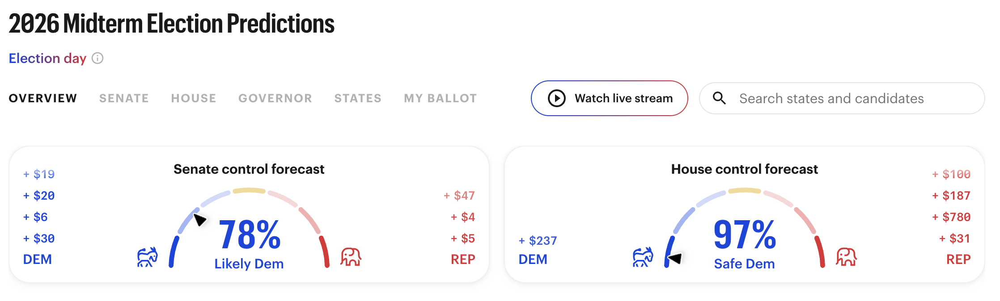

预测市场在2024年美国大选中一战成名，如今正迎来另一场关键考验。
周二，美国中期选举正式开启投票。Polymarket等预测市场的最新数据显示，民主党横扫参、众两院的概率高达约82%。Kalshi平台数据显示，民主党夺取众议院的概率约为97%，夺取参议院的概率约为78%。

这一判断与主流民调方向基本一致。截至选举日，Kalshi平台中期选举相关押注总交易额已达13.3亿美元，Polymarket国会相关市场押注额约为1.45亿美元，行业合计押注规模超过14.8亿美元，创历史新高。
此次中期选举被视为特朗普第二任期的一次公众信任投票，其结果不仅将重塑国会权力格局，更直接关系到预测市场这一新兴行业的公信力走向。业内人士指出，若最终结果与预测市场的高概率押注出现重大偏差，该行业的声誉将受到严重冲击。
蓝潮押注：民主党两院全取概率几何
在众议院方面，预测市场数据显示，民主党夺席概率约为94%至97%；参议院方面，民主党胜算约为74%至78%。综合来看，民主党同时拿下两院的概率约为82%。 

从具体竞争性席位来看，部分参议院关键竞选是此轮押注的核心焦点。据非营利机构反腐数据集体（ACDC）统计，德克萨斯州参议院席位已吸引约6700万美元押注，为各州中最高，Kalshi相关数据则显示该数字已接近1亿万美元。数据显示，市场隐含民主党候选人James Talarico击败共和党德州总检察长Ken Paxton的概率约为76%。
密歇根州参议院席位吸引逾3100万美元押注，市场显示民主党候选人Abdul El-Sayed击败共和党人Mike Rogers的概率约为83%。此外，缅因州和南卡罗来纳州的参议院席位同样吸引了大量押注资金。

Kalshi数据显示，涵盖两党国会掌控权、席位数量及平衡权力的综合性市场，总交易额约达2.77亿美元，其中德克萨斯州参议院席位一项即占其中约四分之一。
交易高度集中，众议院关注度偏低
尽管整体押注规模可观，但中期选举相关交易高度集中于少数高知名度参议院席位，众议院竞争性席位的交易量则明显稀薄。
据彭博对Kalshi交易数据的分析，Kalshi上仅有5个众议院席位的交易额超过100万美元。ACDC的分析报告指出，Polymarket和Kalshi上几乎所有中期选举相关市场的流动性均极为有限，仅需数千美元的押注便足以显著移动相关市场的预测概率。
"当平台开设数以万计的市场，但大多数并不具备全国知名度、也无法吸引足够的押注量时，就会产生大量漏洞——一个居心叵测的参与者只需少量资金便可操纵赔率。"ACDC联合创始人、乔治华盛顿大学政治学教授David Szakonyi表示。
Kalshi发言人Jack Such对上述结论提出反驳，称ACDC的调查结论"毫无根据"，实际操纵成本远高于报告所述，且其市场对此类操纵行为具备良好的校正能力。Polymarket未就此置评。
预测市场公信力面临考验
预测市场在2024年美国总统大选中声名大噪，彼时其押注结果领先于主流民调，提前指向特朗普胜选。然而此后，该行业在巴西总统大选和以色列大选中均出现明显偏差。
据路透报道，巴西总统路易斯·伊纳西奥·卢拉·达席尔瓦在上月的大选中击败右翼对手Flavio Bolsonaro，但赛前Kalshi和Polymarket显示其胜算仅约20%。范德堡大学政治学教授Joshua Clinton分析称，这可能是因为复杂交易者过度修正了民调低估右翼候选人实力的系统性误差所致。平台方则回应称，20%概率的事件本就时有发生，政治上演意外并不罕见。
范德堡大学法学院副院长Yesha Yadav表示，"周二的中期选举确实代表着新一波预测市场的真正考验"，今年众多国会席位的选举结果，将为该行业的整体表现提供更完整的评分依据。
新兴预测市场联盟CEO Sean Patrick Maloney则表示，市场从不声称自己无懈可击，但在"一个充满混乱与偏见新闻来源的世界里"，预测市场提供了一种无偏见的事件预测方式。
政治押注萎缩，行业模式之困
值得注意的是，尽管整体押注规模创下新高，但与2024年相比，预测市场的政治押注热情实则有所降温，行业的结构性困境随之浮现。
据彭博对Kalshi和Polymarket数据的分析，今年选举日前末周的美国大选相关交易额，与2024年大选前同期基本持平，并未体现出明显增长。与此同时，Polymarket的美国大选交易量较两年前则出现明显下滑。今年10月，政治类押注在Kalshi和Polymarket合计交易量中占比仅约1%，而2024年总统大选期间这一比例曾高达三分之二。
平台整体交易量的爆发式增长，主要来自体育和加密货币价格押注，以及所谓"组合押注"（parlays）等高风险多事件联合押注产品。
这一现象对行业带来双重压力。Wake Forest大学经济学教授Koleman Strumpf表示，"他们需要向投资者证明自己有另一块业务，同时也需要向监管机构、法官证明，预测市场中更具社会价值的部分是重要的。"
MCP新兴市场投资组合经理Carlos Hardenberg则提醒投资者，预测市场是有价值的参考工具，"但不应将其与确定性混为一谈"。